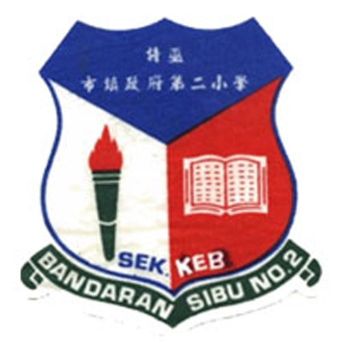

üè´ELEMENTARY SCHOOLüè´

SEKOLAH KEBANGSAAN BANDARAN SIBU NO.2
2009 - 2010
SK Bandaran Sibu No.2 was opened in 1961 with known as SUDC No.2 Primary School. Since 1975 the government has taken over the school. The acquisition by the government also involved changing the name of the school. Since then the name of the school has been changed to SRK Bandaran Sibu No.2 at the beginning five teachers including the headmaster served in this school. The number of classes at that time was 4 which consisted of two English and two Chinese streams. Like other schools, this school is not exempt from changes in education policy, namely the change of flow from the English language to the Malay language. This change occurred in 1977.
üè´MIDDLE SCHOOLüè´
SEKOLAH KEBANGSAAN S.E.D.C
2010 - 2014
The school was established in 1997 and has three building blocks, namely Block A for Administration, Block B for Class rooms and Block C for workshop rooms, surau, Music Room, Science Laboratory and KK room. The first master is Mr. How to Sing with 8 teachers. currently the school has a total of 35 teachers academic staff and 4 support staff including head teachers and preschool assistants with an enrollment of 623 students. The school is located in the residential area of Jalan Mantis, Lanang. Most of the students come from factories, housing and also from PGA camp, Sibu
üè´HIGHSCHOOLüè´
SEKOLAH MENENGAH KEBANGSAAN LANANG
2015 - 2019
Sekolah menengah kebangsaan Lanang was established in 2003 to accommodate the density of students in Ulu Lanang. The rapid population increase from day to day and the lack of secondary schools available in this area led the government to establish the Lanang National Secondary School on Jalan Lada. We are grateful to the government for providing a national Lanang Secondary School in this area. We hope that by building this school, students will be able to continue their studies in the nearby area after graduating from Year Six. We also hope that educators are eager to educate students more diligently in order to produce excellent students, glorious and distinguished
üè´UNIVERSITYüè´

UNIVERSITI TEKNOLOGI MARA
2021 - NOW
On June 3, 1994, Institut Teknologi MARA built its 11th branch campus in the state of Kedah Darul Clear. The campus is located on 350 acres of land in Mukim Bujang (between Pekan Semeling and Pekan Merbok) which is about 14 kilometers from the town of Sungai Petani which was developed as a result of the approval
of the allocation for the 6th Malaysia Plan is RM38.4 million. The campus was opened on October 1, 1997 able to accommodate a capacity of 7,000 students, and has been inaugurated by YB Dato ' Paduka Daim Zainuddin, 1st Minister of Finance and Special Tasks in November 1999.
REFERENCES
SK BANDARAN SIBU NO.2: SEJARAH SEKOLAH. (n.d.). SK BANDARAN SIBU NO.2. Retrieved June 1, 2023, from http://skbandaransibuno2.blogspot.com/p/sejarah-sekolah.html
SEJARAH. (n.d.). Sksedc.zoom-A.com. Retrieved June 1, 2023, from http://sksedc.zoom-a.com/sejarah.html
Universiti, J., Tun, P., & Razak, A. (n.d.). INSTITUT TEKNOLOGI MARA CAWANGAN KEDAH. Retrieved June 1, 2023, from https://ir.uitm.edu.my/id/eprint/61567/1/61567.pdf
PENGENALAN DAN SEJARAH SEKOLAH. (n.d.). SMK LANANG. Retrieved June 1, 2023, from https://smklanang.weebly.com/pengenalan-dan-sejarah-sekolah.html